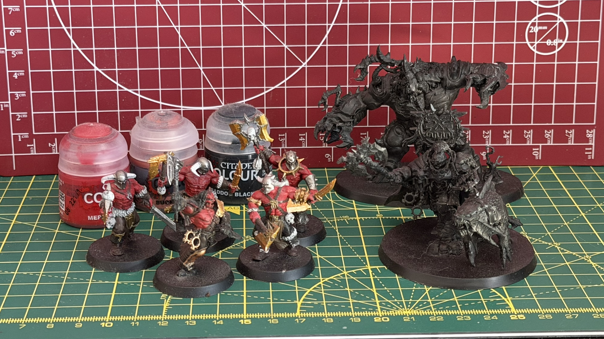
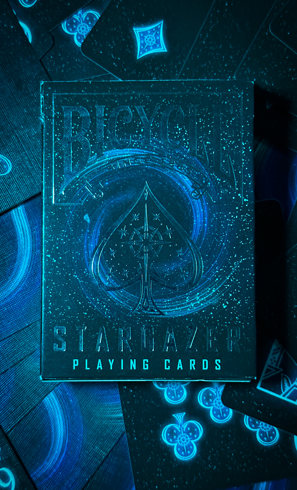
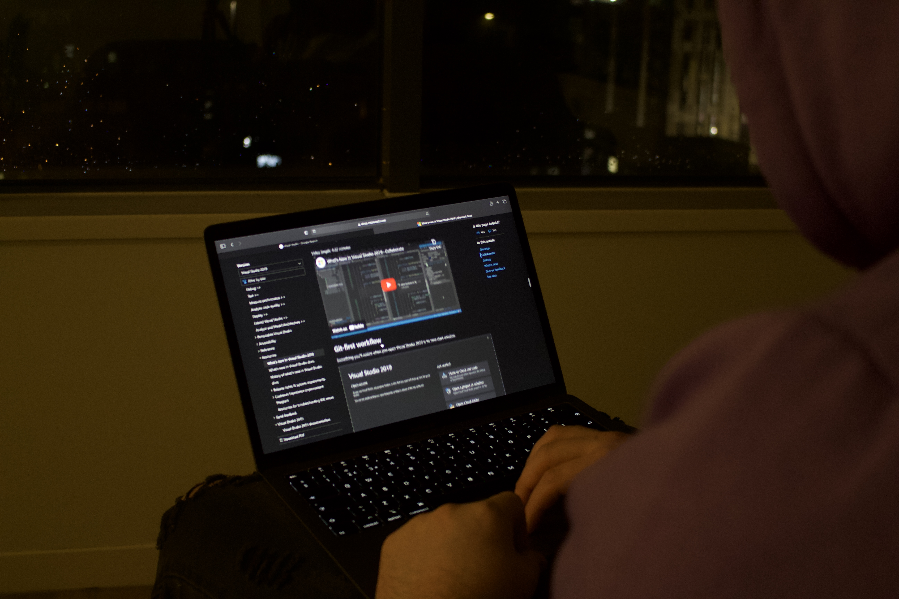

// PERSONAL_HOBBIES
When disconnected from compilation environments and custom engine development, system resources are reallocated toward manual engineering, physical optimization, and creative media capturing.
[PHYSICAL_ACTIVITIES]

Mountain Biking
My favourite form of excersise is without a doubt mountain biking, from trail riding, to servicing my bike i enjoy it all. It's also a form of excersise that pairs nicely with my passion for photography, allowing me to explore whenever i feel like it and harness my creativity at the same time.
[DIGITAL_PASTTIMES]
Video Games
Of course as a game developer i also love playing games both for my own enjoyment and inspiration, some of my favourites are the Tomb Raider Survivor Trilogy, Counter Strike 2 and puzzle games of all shapes and sizes.
[OFFLINE_CREATIVITY]

Tactile Hobbies
Exploring manual, fine-motor skill sets outside the digital world is also something i try to prioritise, taking some time to escape the digital world. At the moment i enjoy building and painting warhammer minis, but i would also like to get into woodworking in the future.
[DIGITAL_CREATIVITY]

Photography
Finally, my main long standing hobby outside of games is photography, i am completely self-taught never even followed a tutorial just learnt by doing which i feel is the main reason it has stuck around so long unlike some other creative hobbies i have tried to get into in the past.
// MY_PHOTOS



